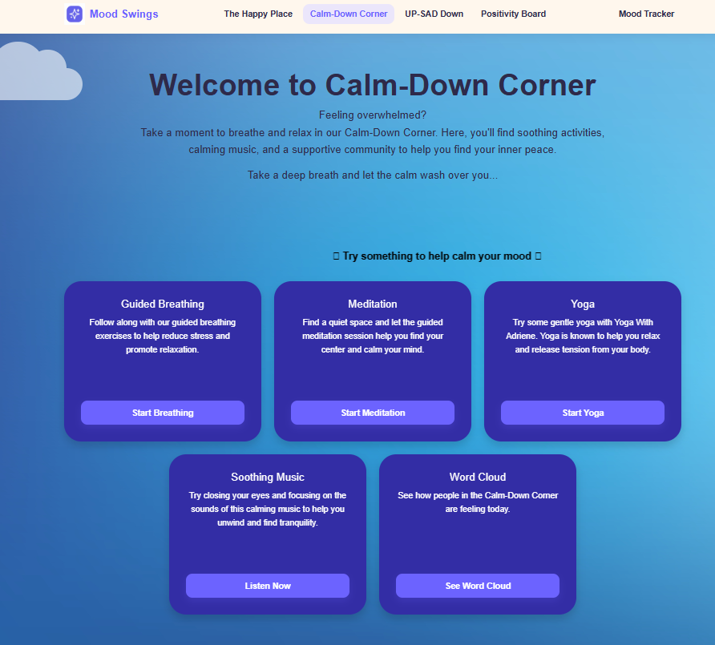
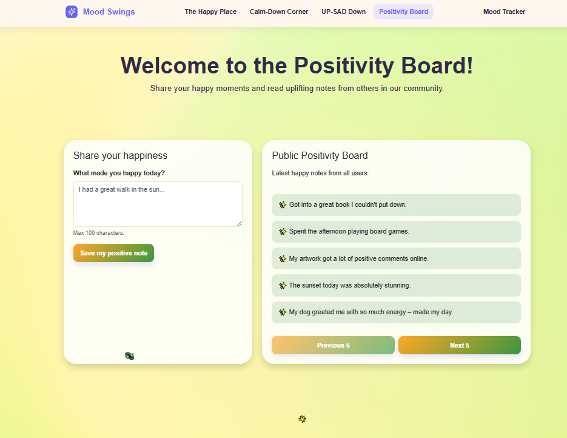

Hackathon - Mood Swings
Built during my second hackathon as Frontend Lead, Mood Swings is a mood tracking web app
where users select their daily mood and visit different themed "towns" based on how they're
feeling, from The Happy Place to The Calm-Down Corner. My Role - Frontend Lead:
- Designed and implemented the user interface using HTML, CSS, and JavaScript.
- Collaborated with the backend team to integrate API endpoints for mood tracking and data storage.
- Ensured a responsive design for optimal user experience across devices.
- Contributed to brainstorming sessions for app features and user flow.
- Participated in testing and debugging to ensure a smooth user experience.
Result: 🥉 3rd Place
Python
HTML
CSS
JavaScript
Bootstrap

